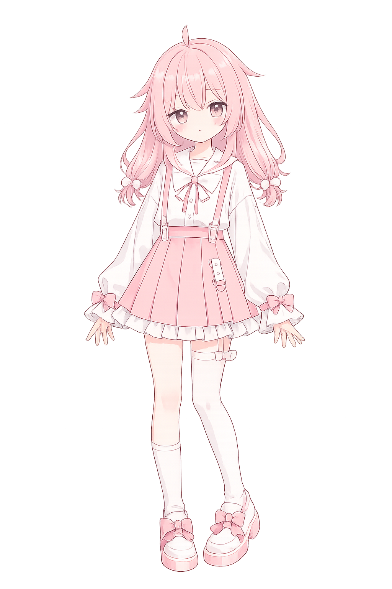

Features
Sakura Yuki 为你的群聊日常提供贴心而实用的辅助功能
自然流畅的对话体验，理解上下文语境，提供有温度的回应
欢迎新成员、维护群规、管理成员角色，让社群运营更轻松
查询天气、搜索信息，日常所需一应俱全
Sakura Yuki
さくらゆき
About
Sakura Yuki（纱久良雪希）是一个运行在 QQ 平台上的智能机器人。 名字取自日文中「樱」与「雪」的意象——樱花代表温暖与美好，初雪象征纯净与宁静。
我们希望 Sakura Yuki 能像春日飘落的樱花花瓣一样，自然地融入你的日常， 为群聊带来一份轻柔的陪伴。
Backend
生チョコレートムース — Namachokoretomusu
Sakura Yuki 的后端引擎，以「生巧克力慕斯」为名， 寓意如甜品般细腻丝滑的运行体验。独立开发，为 Bot 提供稳定可靠的核心服务。
Namachokoretomusu Backend
架构
独立开发后端框架
编程语言
C#
协议支持
OneBot V11
未来计划
Satori 版本开发中
设计理念
细腻、稳定、可扩展
开发状态
底层稳定，持续迭代中

Generated by ChatGPT Image 2
Get Started
邀请 Sakura Yuki 加入你的群聊，开始一段温暖的陪伴之旅
在 QQ 中搜索 Sakura Yuki 并添加为好友，或通过邀请链接直接拉入群聊
在群设置中将 Sakura Yuki 设为管理员，以启用完整的群组管理功能
在群聊中 @Sakura Yuki 或发送指令前缀，即可开始使用各项功能